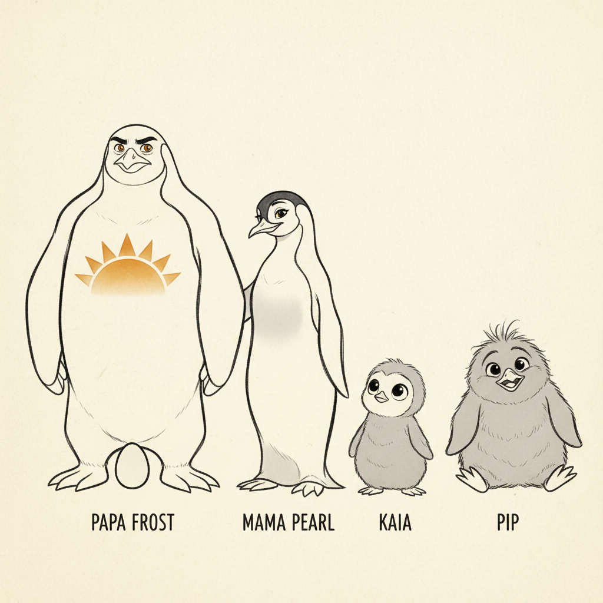
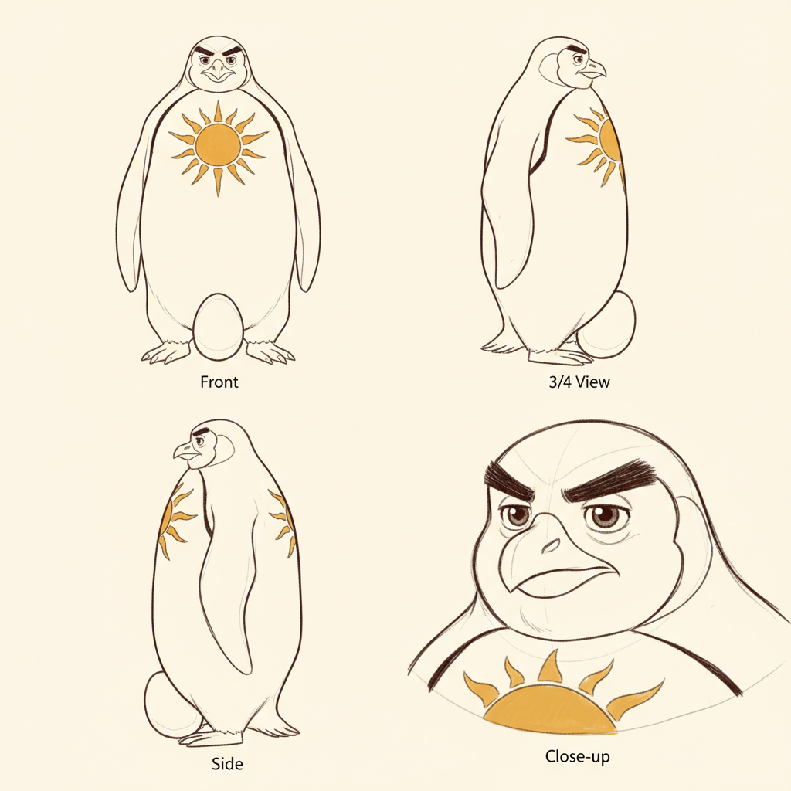
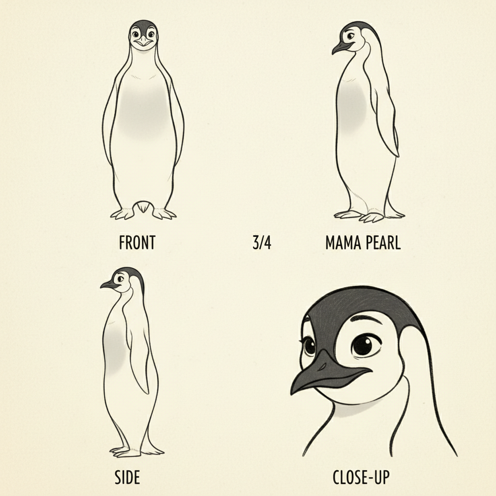
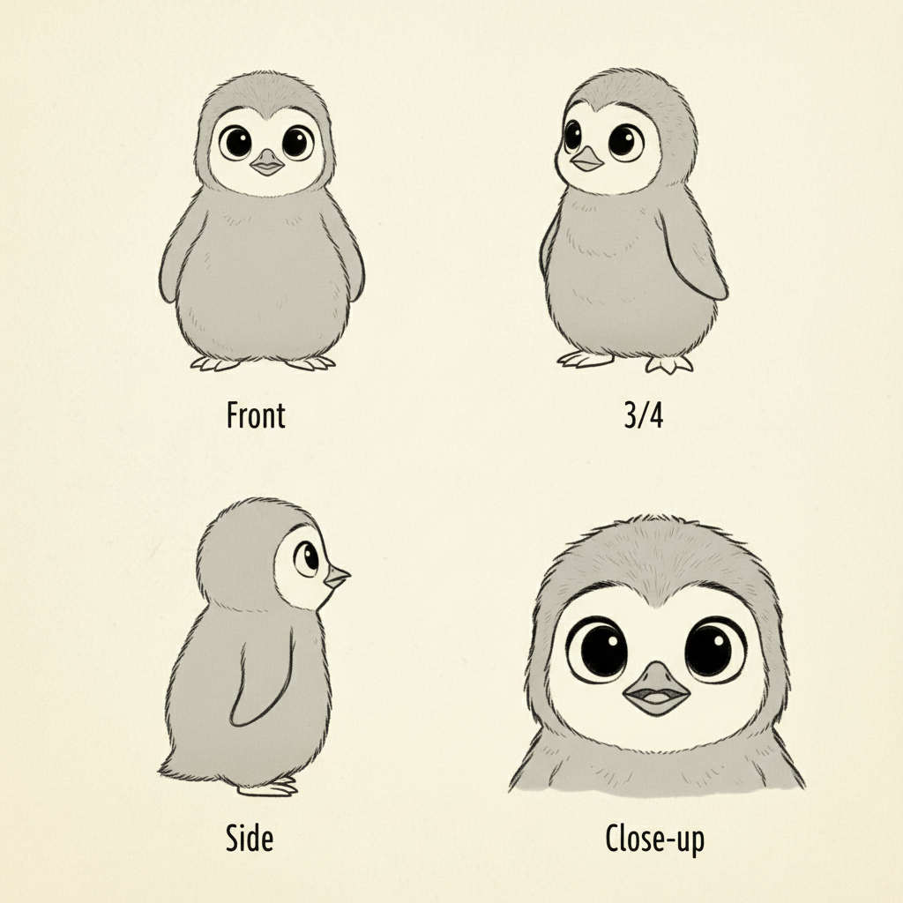
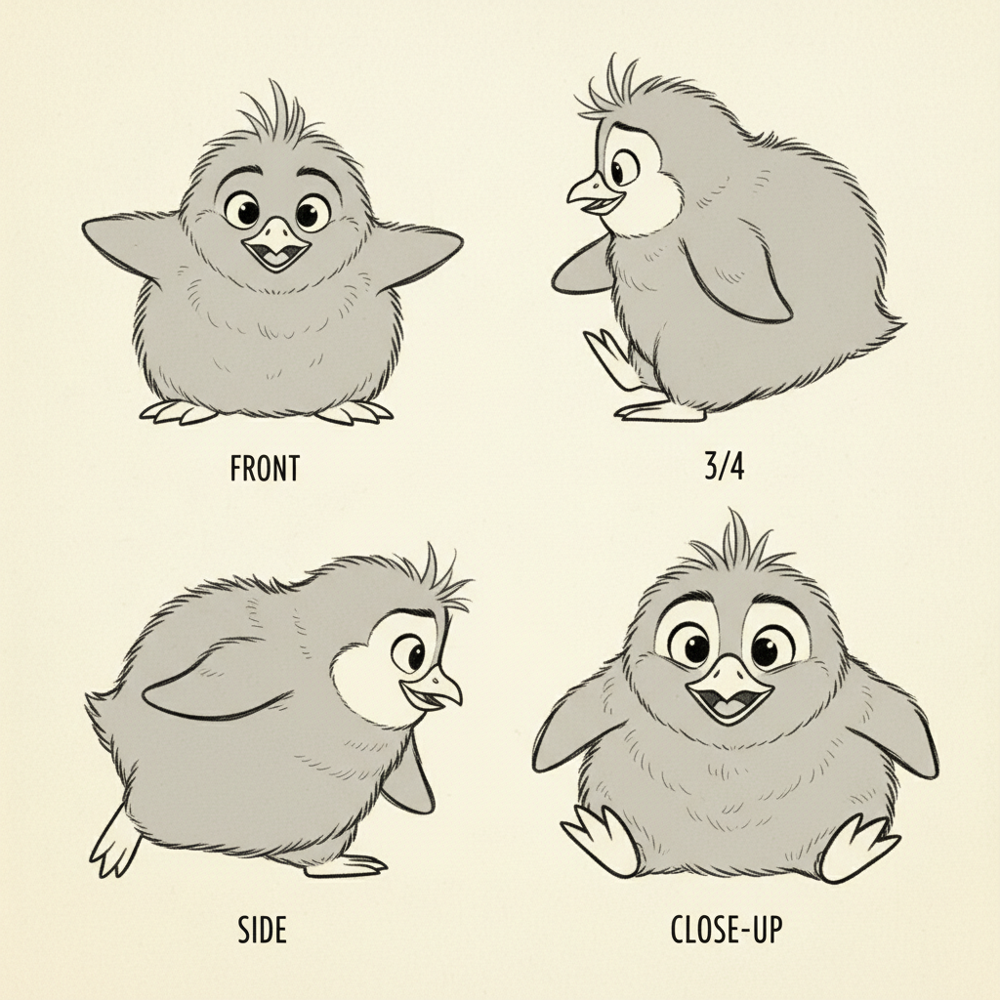
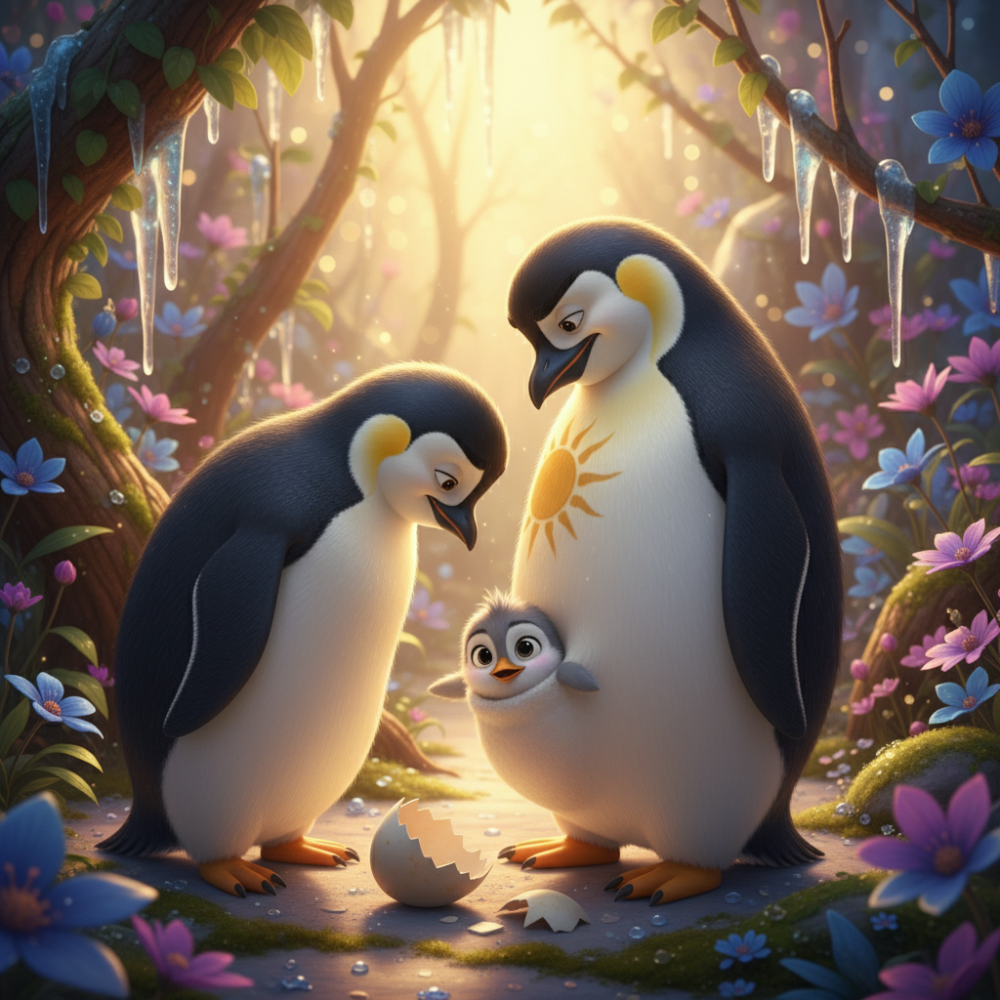
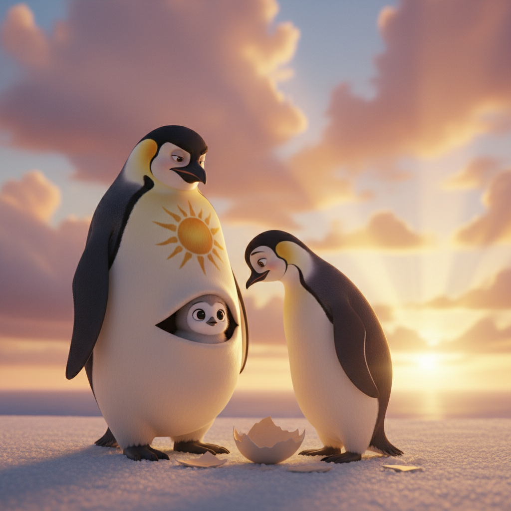
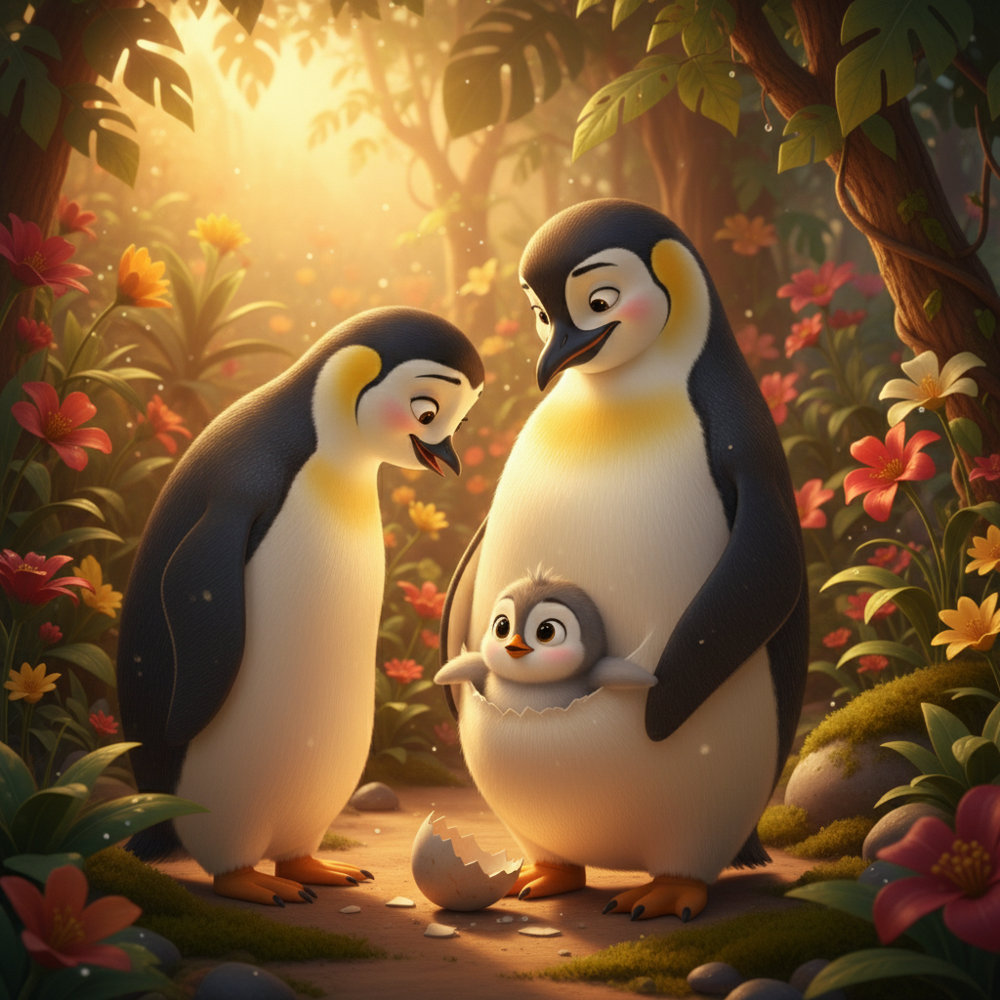
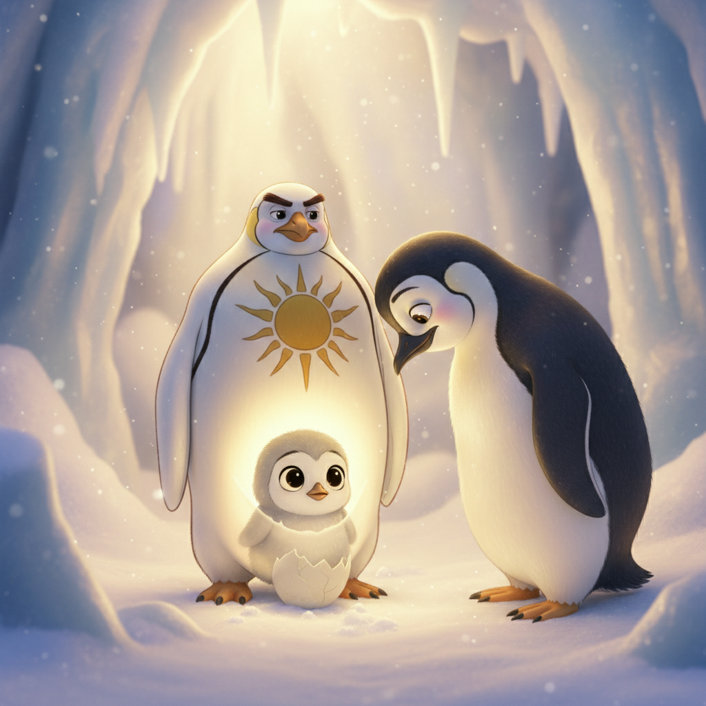
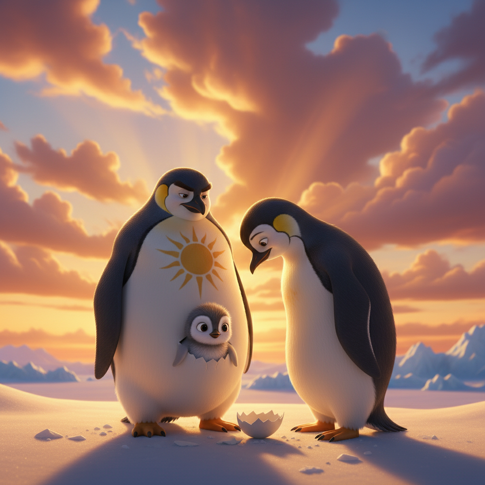

Penguins: The Warmest Family on Ice
Follow Kaia the emperor penguin chick through her first months, from hatching in Papa's warm pouch to her first swim with the whole family
Preface
Welcome to the sparkling world of Antarctica, where emperor penguins prove that love is the warmest thing of all! In this adventure, we'll follow Kaia, an adorable fluffy chick, as she discovers the wonders of her icy home with her devoted Mama and Papa.
Emperor penguins are the most amazing parents in nature. Papa keeps the egg warm on his feet for months, tucked under a special pouch, while Mama goes fishing to bring back the best food. When the chick hatches, both parents take turns caring for their baby — a true team!
Through Kaia's first months, you'll discover how penguins huddle together for warmth, toboggan on their bellies for fun, sing to find each other in a crowd of thousands, and take the most exciting first swim imaginable. Get ready for a cozy adventure!
Art Direction
Pre-Production Pipeline
Step 0: Storyline
pending (0 attempts)
pendingStep 1: Unified Cast Sheet
approved (1 attempts)
ApprovedStep 2: Character Sheets
approved
Papa Frost: approvedMama Pearl: approved
Kaia: approved
Pip: approved
Step 3: Mood Proposals
approved
Moods: epic-skies, soft-intimateStep 1: Unified Cast Sheets

approved.jpg (APPROVED) unified-cast-v1.jpg
unified-cast-v1.jpg
Step 2: Papa Frost Sheets
 approved.jpg (APPROVED)
approved.jpg (APPROVED)

sheet-v1.jpgStep 2: Mama Pearl Sheets
 approved.jpg (APPROVED)
approved.jpg (APPROVED)

sheet-v1.jpgStep 2: Kaia Sheets
 approved.jpg (APPROVED)
approved.jpg (APPROVED)

sheet-v1.jpgStep 2: Pip Sheets
 approved.jpg (APPROVED)
approved.jpg (APPROVED)

sheet-v1.jpgStep 3: Pixar Mood Proposals
 APPROVED
APPROVED

1-translucency-botanical
2-epic-intimate
3-golden-botanical
4-translucency-intimate
5-epic-goldenCharacter Cast
Papa Frost
Tall proud emperor penguin father with golden-orange chest patch, gentle warm eyes, devoted and protective
No portraitMama Pearl
Beautiful sleek emperor penguin mother with soft silver-white chest, gentle eyes, graceful and loving
No portraitKaia
Tiny adorable fluffy grey emperor penguin chick with enormous curious dark eyes and silver-grey down feathers
kaia-hatches.jpgPip
Slightly older and rounder fluffy grey penguin chick with a funny tuft of fluff sticking up on his head, mischievous and playful
pip-portrait.jpgScene Plan (13 scenes)
Meet Papa Frost
Papa Frost is the proudest penguin in all of Antarctica! He is tall and handsome, with a sleek black-and-white tuxedo and a beautiful golden-orange patch on his chest that glows like sunshine. Right now, Papa has the most important job in the world — he is keeping a very special egg warm on top of his feet, tucked snugly under his belly pouch. 'Don't worry, little one,' he whispers to the egg. 'I'll keep you warm until Mama comes home.'
The Cozy Huddle
When the wind blows cold, the penguin papas have a brilliant idea — they huddle together! Hundreds of penguins press close, sharing their warmth like one enormous feathery blanket. They take turns — the ones on the outside slowly shuffle to the warm center, and the warm ones move out to take their turn. 'We take care of each other,' Papa tells the egg. 'That's what families do.' Together, they are warmer than any house!
Mama Pearl Comes Home!
One beautiful morning, a familiar call rings across the ice — 'I'm HOME!' It's Mama Pearl! She's been on the most amazing fishing trip, diving deep into the sparkling ocean to bring back the very best food for her family. Mama is sleek and beautiful, with a soft silver-white chest and the gentlest eyes. She and Papa sing their special song to find each other among thousands of penguins. When they meet, they bow to each other and tap beaks — a penguin kiss!
Welcome, Little Kaia!
CRACK! A tiny sound comes from the egg. CRACK-CRACK! Papa and Mama watch breathlessly. And then — a little grey head pops out! 'Hello, world!' Baby Kaia blinks her enormous dark eyes and sees her parents for the very first time. She is the fluffiest, most adorable ball of silver-grey down ever born. Papa's eyes fill with happy tears. Mama nuzzles Kaia's tiny head with her beak. 'You're here,' they both whisper. 'Our beautiful baby is here.'
Papa's Warm Pouch
Kaia's favorite place in the whole world is Papa's pouch! She sits on his big warm feet, tucked under his soft belly feathers, and peeks out at the sparkling ice world. It's like the coziest sleeping bag ever invented. 'Papa, why is everything so sparkly?' she asks. 'Because you're seeing it for the first time,' Papa smiles. 'Everything is magical when you're brand new.' Kaia wiggles deeper into the pouch and yawns. Being brand new is wonderful.
Mama's Special Breakfast
Time for Kaia's very first meal! Mama Pearl leans down and feeds Kaia beak-to-beak — the most delicious fish soup a baby penguin could dream of. 'Mama brought this all the way from the ocean, just for you,' Papa explains proudly. Kaia gobbles it up and chirps for more. Mama laughs her soft penguin laugh. 'You eat just like your Papa!' From now on, Mama and Papa will take turns — one fishing in the ocean, one keeping Kaia warm and fed. The best team ever!
Meet Pip, the Brave Explorer
In the penguin nursery — called a crèche — Kaia meets Pip! Pip is a bit older and rounder, with a funny little tuft of fluff that sticks straight up on his head. 'Want to see something AMAZING?' Pip whispers. He waddles to the edge of a tiny ice hill and slides down on his belly — WHEEE! 'That's called tobogganing,' he announces proudly. 'I invented it!' (He didn't, but Kaia is very impressed.) They become the very best of friends.
Belly Sliding!
Tobogganing is officially the BEST THING EVER! Kaia and Pip spend all day sliding on their fluffy bellies across the smooth ice. They race each other, spin in circles, and crash into soft snow banks — POOF! 'Again! Again!' Kaia squeals. Even the grown-up penguins toboggan — it's actually faster than walking! Mama and Papa watch from nearby, laughing as the chicks tumble and slide. 'We used to do that too,' Mama whispers to Papa.
Our Family Song
Every penguin family has their own special song — and no two songs are the same! Papa's voice is deep and rumbly like gentle thunder. Mama's voice is clear and bright like a bell. And Kaia's little voice is squeaky and adorable. Together, they point their beaks to the sky and sing! Their song echoes across the ice. 'This is how we'll always find each other,' Papa explains. 'Even in a crowd of a thousand penguins, I will always know YOUR voice.'
The Dancing Lights
One night, Kaia looks up and gasps. The sky is DANCING! Great curtains of green and purple and pink light ripple across the darkness like a magic show. 'Papa! Mama! The sky is on FIRE!' 'Those are the Southern Lights,' Mama whispers. 'Some say they're the sky's way of singing.' Kaia watches, mouth wide open, as the colors swirl and shimmer above the ice. It's the most beautiful thing she has ever seen. She decides right then: Antarctica is the best home in the whole universe.
The Funny Feather Stage
One morning, Kaia notices something strange — her fluffy grey baby feathers are falling out! In their place, sleek new black-and-white feathers are growing in. She looks absolutely RIDICULOUS — half fluffy, half sleek, like a penguin wearing a costume that doesn't fit. Pip looks even funnier — he has a big grey patch right on his face! 'We look like clouds with legs!' Kaia giggles. 'But soon,' says Mama proudly, 'you'll have the most beautiful waterproof coat in the ocean.'
Kaia's First Swim!
The day has come — Kaia's new waterproof feathers are ready, and it's time for her VERY FIRST SWIM! She stands at the edge of the ice, looking at the sparkling turquoise water. Her heart beats fast. Papa stands on one side. Mama stands on the other. 'We'll be right here,' they promise. Kaia takes a deep breath and — SPLASH! The water is cool and wonderful! She zooms through it like a rocket, twisting and spinning. 'I'M FLYING UNDERWATER!' she shouts with pure joy.
Together Forever
As the golden Antarctic sun paints the ice in warm shades of amber and rose, the whole colony gathers together. Papa, Mama, and Kaia stand side by side, sleek and beautiful in their matching tuxedos. Kaia is almost as tall as her parents now! She can swim, she can sing, she can toboggan faster than Pip (don't tell him). But the very best thing about being a penguin, Kaia knows, is having a family that keeps you warm — no matter how cold the world gets. And that is the warmest thing of all.
Viewer Details
The Brood Pouch
Look at Papa Frost's feet — see that special flap of warm skin? That's the brood pouch! Emperor penguin fathers balance the egg (or chick) on top of their feet and cover it with this warm, feathered pouch. Inside, the temperature stays a cozy 36°C even when it's -40°C outside. It's nature's best sleeping bag!
Waterproof Feathers
Emperor penguin feathers are incredible! They have about 100 feathers per square inch — more than almost any other bird. The feathers overlap tightly like roof tiles, and each one is coated with a special oil that repels water. This keeps penguins completely dry even when diving in freezing water. That's why Kaia had to wait for her adult feathers before swimming!
Underwater Eyes
Kaia's big dark eyes aren't just adorable — they're specially designed for underwater hunting! Penguins can see perfectly both above and below water. Their eyes adjust quickly from bright ice to the dark deep ocean. They can even see in near-darkness at 500 meters deep, helping them spot tiny fish and krill.
The Penguin Beak
Mama Pearl's beak is a multi-tool! The orange-pink coloring at the sides helps penguins recognize each other. The sharp, curved tip is perfect for catching slippery fish. And inside, tiny backwards-pointing barbs grip prey so it can't escape. Mama uses her beak for feeding Kaia, preening her feathers, and giving gentle penguin kisses!
Fun Facts
Champion Divers
Emperor penguins can dive deeper than 500 meters (1,640 feet) — that's taller than the Eiffel Tower! They can hold their breath for over 20 minutes while hunting for fish, squid, and krill in the deep, dark ocean. Their special blood can carry extra oxygen, like a built-in scuba tank!
Belly Surfers
Penguins don't just walk — they toboggan! By lying on their bellies and pushing with their flippers, they can slide across the ice much faster than waddling. It's like having a built-in sled wherever you go! Baby penguins learn to toboggan as soon as they can walk, and it's their favorite game.
No Teeth, No Problem!
Penguins don't have teeth! Instead, they have backwards-pointing barbs inside their beaks and on their tongues that help grip slippery fish. Once a fish goes in, it can only go one way — down! This clever design means penguins never drop their dinner, even underwater.
The Warmest Huddle
When emperor penguins huddle together, the temperature inside the group can reach a toasty 37°C (98°F) — as warm as your body! The penguins on the outside slowly shuffle to the center to warm up, while the warm ones move out. They take turns so everyone stays cozy. It's like a giant, rotating group hug!
Hidden Generation Sections
Extreme close-up of emperor penguin feathers showing the dense, overlapping waterproof structure, individual barbs visib...
Using the penguin from reference, close-up of emperor penguin's feet showing how they keep eggs/chicks warm with the bro...
Ref: meet-papaUsing the penguin chick from reference, close-up of emperor penguin's large dark eye showing adaptation to underwater vi...
Ref: kaia-hatchesUsing the penguin from reference, close-up of emperor penguin's beak showing the orange-pink coloring and strong curved ...
Ref: mama-returnsUsing the penguin from reference, show an emperor penguin swimming deep underwater surrounded by beautiful fish and ocea...
Ref: kaia-hatchesUsing the penguin chick from reference, show a line of penguins sliding on their bellies across the ice in a fun tobogga...
Ref: kaia-hatchesUsing the penguin from reference, show an emperor penguin with mouth open showing the backwards-pointing barbs inside th...
Ref: mama-returnsCross-section illustration showing how emperor penguins huddle — warm center vs cold outside, arrows showing rotation pa...